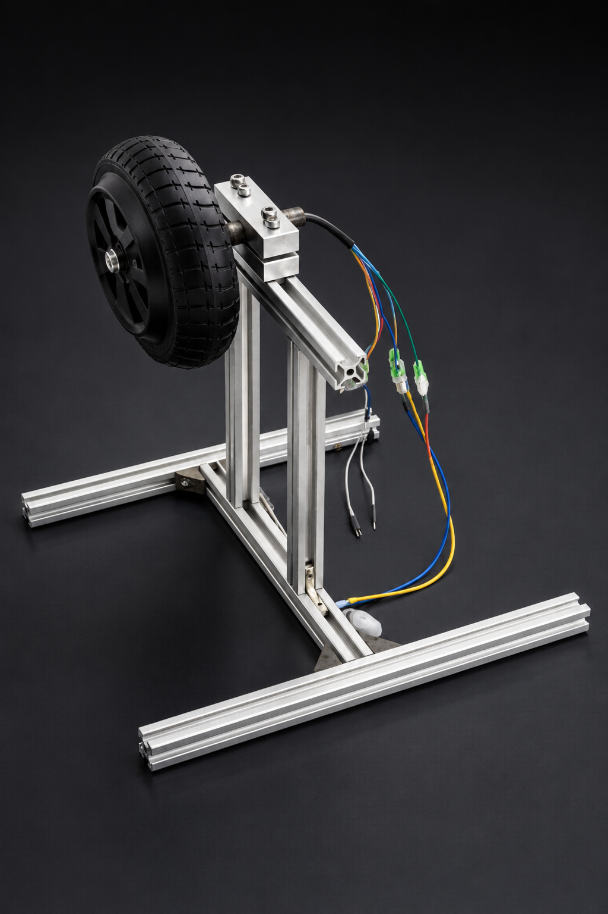

Back to Home
CAD Design
BLDC Motor Mount.
A precision-engineered BLDC (Brushless DC) motor mounting bracket designed in SolidWorks. Manufactured into a physical part using manual milling, with the design also compatible with CNC machining. The assembly consists of two aluminium parts — a flat base and a rounded cradle — fully documented with technical drawings for production.
Assembled Motor

Technical Drawings
Motor Mount Flat
Download PDF
Motor Mount Round
Download PDF